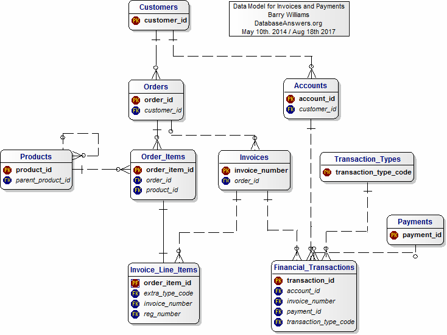

|
|
This Data Model shows only the Primary and Foreign Keys, and here is a
version that shows all the Attributes in each Table.
If you have any comments or suggestions please Email me
Here's a variation we created especially for Anthony,
and another one for Car Hire Invoices
We might design a Data Mart which will be a natural starting-point for Performance Reports and KPIs.
Products in the Products Table are organised in a hierarchy, which we show we show as a 'self-referencing' relationship.
We discuss the technique in this Hierarchies Model, and an example of how it is used is in this Product Catalogs Model.
 |